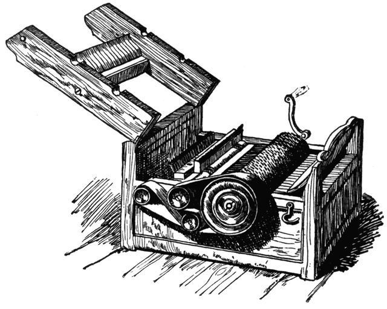

The opportunities for african americans during this time period were not expanded but rather ripped away from them. From 1820 to 1850 slavery was on the incline, rather than looking at abolishing it, the south was stronger than ever on the foundation of slavery with the invention of the cotton gin having boosted slavery, and the fugitive slave act tearing the opportunity of escaping to the north and becoming free away from the slaves.
1802, the patent for the cotton gin is purchased. The cotton gin was created to increase the speed of the process of picking the seeds out of cotton, it was a long and inefficient process that created the need for an invention such as this. Before the introduction of the cotton gin slavery was on the decline there was less and less of a demand for slavery but the cotton gin changed all that; cotton was easier to produce it could do a day's work in just minutes and it made cotton plantation owners some of the richest people in the world. Why would a southerner want to abolish slavery if they were getting rich off of the free labor and never had to pay a wage? The invention of the mechanical loom to turn the cotton into cloth and the invention of the steamboat and steam locomotive to transport the cloth and cotton increased the demand for cotton and made slavery the basis of the U.S. economy.
The Underground Railroad was one of the very few things that was an expansion of opportunity for slaves. It was a group of people that aided slaves in escaping slavery to seek a safe haven in the North. The Underground Railroad was made up of a slew of secret routes and safe houses originating in the slave states and extending all the way to the Canadian border, other routes led from Florida to Cuba or Texas to Mexico. This was a real group of people but at the same time it was a story that slaves would tell each other to instil a sense of hope in the Slaves and plant the idea in the heads of slaves that there was hope for them. Many slaves were smuggled to the North by this society and were given a chance at life, a chance at freedom.
The Fugitive Slave Act ripped the opportunities given to slaves by the North and the Underground Railroad away. The Fugitive Slave act enacted in 1850 supported southern ideals; local and federal authorities could be called upon by slave owners, whose slaves have escaped to the North, to find and return the escaped slave to the North. This act was a setback for African Americans and Northern ideals because the North was a supposed safe haven for the escaped slaves but with the installment of this act the South was given power over the North and it just led to more conflict overtime.
Many opportunities for freedom and success for African Americans were at their fingertips during this time period, with opportunity after opportunity being created and then snuffed out by the South. More opportunities were torn away from African Americans then were gained and tensions were high but change was on the horizon.